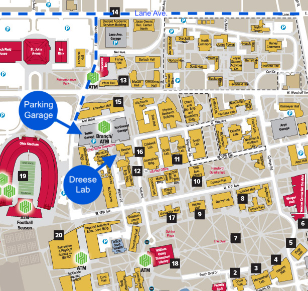

|
Finding your way to The Ohio State University is easy. It is in the center of Columbus, slightly north of downtown. From the north:Take any major highway to I-270. Take I-270 to SR 315 south. From SR 315 south, exit at Lane Avenue. From the south: Take any major highway to I-71 north. Take I-71 north to SR 315 north. Exit at Lane Avenue. From the east: Take any major highway to I-70 west. Take I-70 west to SR 315 north. Exit at Lane Avenue. From the west: Take any major highway to I-70 west. Take I-70 east to SR 315 north. Exit at Lane Avenue. From Port Columbus International Airport: Take I-670 west to I-71 south. Take I-71 south to I-70 west. Take I-70 west to SR 315 north. Exit at Lane Avenue. |
 |
Take Lane Avenue (going east into OSU) over the bridge until you reach Tuttle Park Place road. Take a right onto Tuttle Park Place road and continue down (shortly) through the big 4-way intersection (intersecting with Woody Hayes Dr.). Shortly after the intersection you will see a large parking garage on your left (with an immediate entrance into the garage from the road) named "Tuttle Garage" (2050 Tuttle Park Pl). The OSU Stadium will be directly on your right. Enter this garage and take the ticket to park your car (Note that there is a charge to park anywhere on campus).
I am located in office 491 Dreese Labs, directly adjacent (behind) to the parking garage. It is the tallest red brick building in the immediate area. It also has a characteristic white "spool" on the very top of the building.
Dreese Labs (building 279) and the parking garage (building 088) are shown on this helpful map.